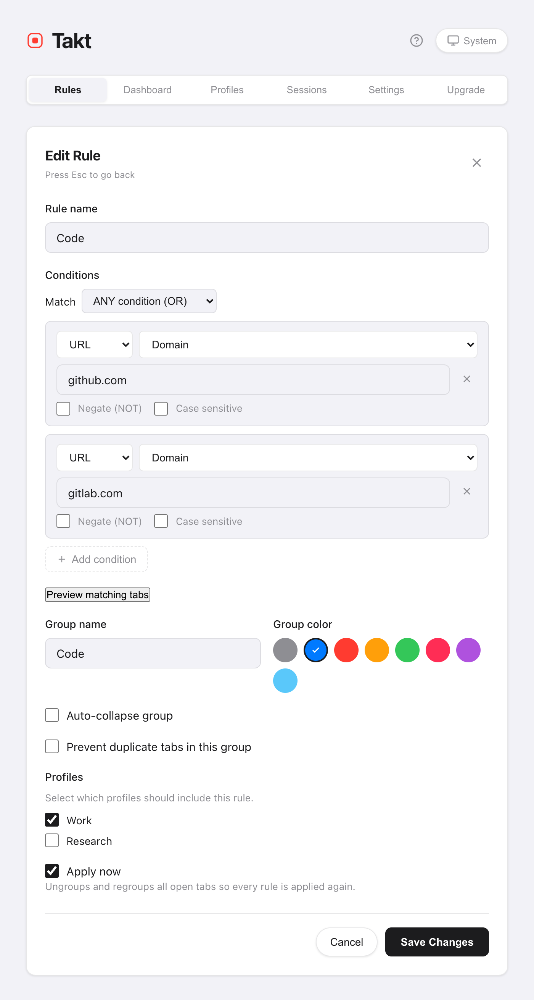
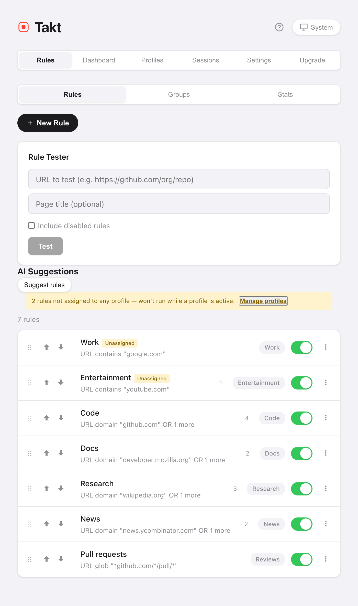

Short answer: install Takt, create a rule such as URL domain github.com → group "Code", blue, and save. From then on every GitHub tab is filed into the blue "Code" group as it loads.
- Free: 5 rules, matching by contains, exact or domain.
- Premium: unlimited rules, glob and regex patterns, page-title matching, up to 10 AND/OR conditions.
- Matching happens on your machine. No account, no analytics.
Why don't Chrome tab groups organize themselves?
Chrome's tab groups are a filing cabinet with no clerk. You right-click, pick "Add tab to group", repeat. Open twenty links during a morning of work and you are filing twenty times, or, more likely, not at all.
Chrome used to offer an AI "Organize tabs" feature for a one-off cleanup, but Google retired it in 2025. Chrome no longer groups tabs for you at all. Even that feature couldn't follow instructions: you couldn't tell it "pull requests always go in Reviews". A rule can.
How do I create a tab grouping rule?
- Install Takt from the Chrome Web Store.
- Open Takt's options page and click New Rule.
- Add a condition. URL · Domain · github.com catches github.com and every subdomain.
- Name the group, pick a color, and save.
Leave Apply now ticked and Takt regroups your open tabs straight away. New tabs are grouped as they load.

Which match type should I use?
Most people need only Domain. Reach for the others when a domain is too broad.
| Match type | Pattern | Catches | Plan |
|---|---|---|---|
| Domain | google.com | docs.google.com, mail.google.com, google.com | Free |
| Contains | localhost | http://localhost:3000/api | Free |
| Exact | https://mail.google.com/mail/u/0/#inbox | Only that URL | Free |
| Glob | *github.com/*/pull/* | Every pull request, any repo | Premium |
| Regex | jira\..*/browse/PROJ-\d+ | Tickets of one project | Premium |
Every condition can also be negated (URL does NOT contain google.com) or made case-sensitive. Premium adds matching on the page title, and combining up to 10 conditions with AND or OR.
What if two rules match the same tab?
The first match wins. Rules are checked from the top of your list down, and checking stops at the first hit.
So order them from specific to broad. A "Reviews" rule for pull requests must sit above a "Code" rule for all of GitHub, or every pull request ends up in "Code". Drag a rule, or use the ↑/↓ buttons, to move it.

How do I check a rule before trusting it?
Two ways, both on the Rules page:
- Rule Tester. Paste a URL (and an optional page title). Takt tells you which rule would fire.
- Preview matching tabs. Inside the editor, this lists the tabs already open that the rule would catch, before you save.
A starter set of five rules
Five rules cover most working days, and five is exactly the free limit.
| Group | Condition |
|---|---|
| Code | Domain github.com |
| Docs | Domain developer.mozilla.org |
| Mail & calendar | Domain google.com |
| Local dev | Contains localhost |
| Watch later | Domain youtube.com |
Not sure what to write? The Insights pane suggests rules from the sites you already keep open.
What rules can't do
Rules match what they're told. A tab from a site you never wrote a rule for stays ungrouped. If you'd rather not write rules at all, switch the grouping mode to Category or AI.
Write one rule. Watch the next tab file itself.
Add Takt to Chrome, freeFAQ
Can Chrome group tabs automatically without an extension?
No. Chrome used to suggest groups with an AI "Organize tabs" feature, but Google retired it. Today you make Chrome tab groups by hand. A rule-based extension such as Takt files tabs automatically and keeps sending the same sites to the same group.
How many rules can I create for free?
5 rules, one condition each, with contains, exact or domain matching. Premium ($3/month or $30/year) removes the limit.
Can I pause a rule without deleting it?
Yes. Every rule has an on/off toggle in the list. A disabled rule keeps its settings and stops matching.
Does Takt send my URLs anywhere to match rules?
No. Matching runs in your browser on locally stored rules. See how Takt keeps data local.